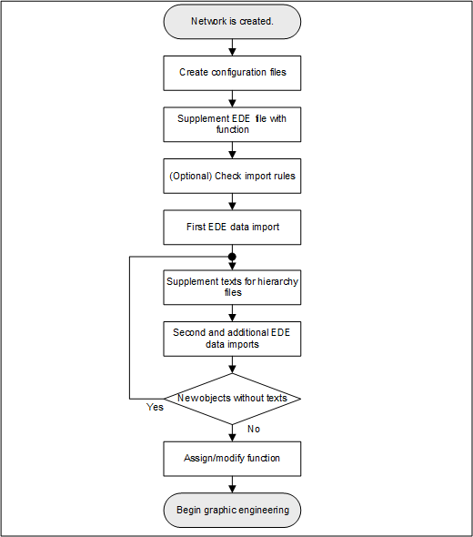
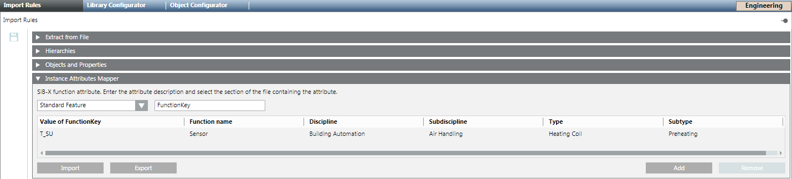
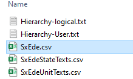
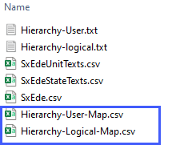
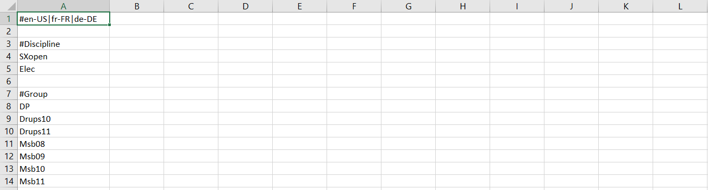
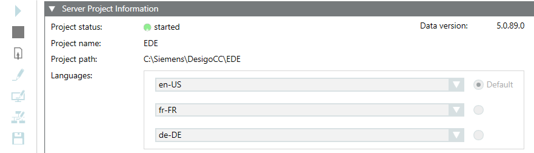
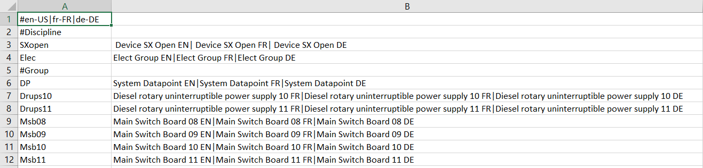
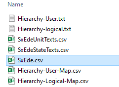

Workflow Offline Engineering

- For the Logical and User View, create one configuration file each (see below).
Note: No configuration files are needed if none of the two views are used. - (Optional) In the EDE file, supplement the function to the given data points.
- Check import rules.
- Import the EDE data.
- Supplement the imported data points with Function (only if this is not done under Step 2).
Creating/Modifying Configuration Files
- Configuration files for the Logical or User View (optional) are created. The imported objects are only displayed in Management View if no configuration file is available.
- Check the delimiters in your EDE file. Open the EDE file using a text editor.
- Using a text editor, create a new Hierarchy-User.txt file or Hierarchy-Logical.txt file (see example at the end of the workflow).
Note: The mapping files must be in the same folder as the import files. - (Optional) Add the correct code-page information for encoding, for example, !encoding!UTF-8.
- (Optional) In separators-1 change the default separator(;) for the EDE file according to your requirements.
- (Optional) In separators-2 change the delimiter for the State text and Unit text columns according to your requirements.
- (Optional) In separators-3 change the separator (|) for languages according to your requirements.
- In the Reference column, set the hierarchy mapping (default column = keyname).
Note: If the Keyname field is empty on an object, no Logical View or User View is created for this object. The object is, however, displayed in Management View. - Define the following entries (for example, location, building, floor, etc.) for each hierarchy level:
- Hierarchy Separator for the reference column (for example, _ ' :). Required for parsing the various hierarchy levels.
- Minimum length of the corresponding hierarchy level.
- Maximum of the corresponding hierarchy level.
Note: For fixed field lengths, the minimum and maximum length must be the same and the hierarchy separator left out. - State text references to existing text groups.
- (Optional) A description of the corresponding hierarchy level.
Note: The description for a virtual hierarchy object is displayed in System Browser. - Select File > Save.
- Copy the file to the folder where the EDE file is located.
- For multilingual support, check that the order in the TXT files and EDE files match the definition on the System Management Console.
Example for Hierarchy-User.txt or Hierarchy-Logical.txt file with three languages (en-US, fr-FR and de-DE):
!encoding!utf-8
#separators-1#;
#separators-2#,;
#separators-3#|
:column-name:keyname
,_,1,15,Location|Location|Standort
,:,1,15,Building|Bâtiment|Gebäude
,_,1,15,Floor|Plancher|Stockwerk
,_,1,20,Plant|Installation|Anlage
,_,1,20,Object|Objet|Objekt
,_,1,25,Data point|Point|Datenpunkt
(Optional) Extension family name

The selected files are checked for proper syntax prior to import. If an error message is displayed, click Open Log for additional information.
If the Hierarchy-User.txt and Hierarchy-Logical.txt files are used, the minimum and maximum length of the hierarchy level of the data point is checked. An error message is displayed if it is too short or too long. The data point is created in the database, but not visible for the corresponding view.
Supplement EDE File with Function
- In Excel, open the EDE file (CSV or XLSX).
- Add the column name Function on the same line as the keyword Keyname.
- In the Function column, enter a unique function-key for each data point.
- Click Save.
Creating a Function Key
Add the Function to the EDE file, if:
- The third-party BACnet device has a standardized data point name
- Multiple data points have the same function
- Future projects have the same data point names of the third-party BACnet device
Workflow
- Supplement function key in the EDE file.
- Extend import rules for third-party BACnet devices.
- (Optional) Export the import rules for additional projects.
- (Optional) Import import rules to the new project
- Select Project > System Settings > Libraries > L1 Headquarter > BA > Device > BACnet > Import rules.
- Click Modify
 and OK.
and OK. - A project-specific library is created.
- Select Project > System Settings > Libraries > L4 project > BA > Device > BACnet > Import rules.
- In the Import rules tab, open the Instance Attributes Mapper expander.
- Click Add.
- A new function key line is added.
- In the Standard Feature drop-down list box, enter the Reference column text field in the EDE file (for example, FunctionKey).
- Define the FunctionKey entries based on the following example:
- Value of FunctionKey: T_SU
- Function name: Sensor
- Discipline: Building automation
- Subdiscipline: Air handling
- Type: Heating coils
- Subtype: Preheater
- Repeat Steps 6 to 8 for each function key.
- Click Save
 .
. - Export the created function keys.

Exporting a Function Key
Scenario: You want to reuse the configuration in another project.
- The function keys are created on project level L4.
- Select Project > System Settings > Libraries > L4 project > BA > Device > BACnet > Import rules.
- In the Import rules tab, open the Instance Attributes Mapper expander.
- Click Export.
- In the dialog box, select a path and enter a name.
- Click Save.
- Save the file to another medium.
- All function keys for L1 – L4 are exported.
Importing Function Keys
Scenario: You created a configuration for another project and want to reuse it on this project.
- A function key file is available.
- A L4 project level is available. If the L4 project level is not available, you can create it with Modify.
- Select Project > System Settings > Libraries > L4 project > BA > Device > BACnet > Import rules.
- In the Import rules tab, open the Instance Attributes Mapper expander.
- Click Import.
- Select the folderand file name.
- Click Open.
- The function keys are imported to the project.
Conduct Initial EDE Data Import
- The network and BACnet driver are created and active.
- The data file includes a description for each data point. The missing description is displayed with the symbol ~.
- (Optional) Create Hierarchy-User.txt and Hierarchy-Logical.txt configuration files for the Logical View and User View.
- Select Project > Field Networks > [Field Network].
- In the Import tab, click Browse and select the EDE file.
- Click Open and select the EDE file.

- In the File type drop-down list, select EDE text file (*.csv) file type or EDE Excel (*.XLSX).
Note: If the Hierarchy-User.txt and Hierarchy-Logical.txt files are used for mapping the views, they must be located in the same location as the import files. - Select the import file:
NOTE 1: The Hierarchy-User.txt (optional) and Hierarchy-Logical.txt (required) files cannot be selected.
NOTE 2: If an error is found while analyzing the file, a message box displays that must be confirmed by clicking OK. Click Open Log for additional Information. - Click Open.
- The pre-processor creates the files Hierarchy-Logical-Map.csv and Hierarchy-User-Map.csv.

- No texts are available in column B for the description.

Supplement Texts for Hierarchy Folder
The various objects in System Browser receive different names by supplementing file Hierarchy-Logical-Map.csv and Hierarchy-User-Map.csv.
Files Hierarchy-Logical-Map.csv and Hierarchy-User-Map.csv | |
Without translation | With translation |
|
|


- Open the files Hierarchy-Logical-Map.csv and Hierarchy-User-Map.csv.
- Supplement the descriptions in column B. Use the special character #separators-3#| (Hierarchy-logical.txt) as separate the language entries.
Note: The sequence of the languages must match the one defined on the System Management Console.

- Create a backup copy of Hierarchy-Logical-Map.csv and Hierarchy-User-Map.csv.
- Copy Hierarchy-Logical-Map.csv and Hierarchy-User-Map.csv back to the original location.
Conduct Second or Additional EDE Data Imports
- Files Hierarchy-Logical-Map.csv and Hierarchy-User-Map.csv are translated.
- Select Project > Field Networks > [Field Network].
- In the Import tab, click Browse and select the EDE file.
- Click Open and select the EDE file.

- Note: Missing entries are supplemented in the existing files if new hierarchy objects are found during an additional import. Supplement the texts and repeat the import.
- In the Source Items list, click
 to select all files.
to select all files.
Note: If Delete unselected objects from views is activated, all automation stations and linked objects that are not located in the selected import file are deleted. The main objects must be deleted manually in Logical View and Physical View as well as User View. - Click Import.
- A message is displayed at the end of the import process that summarizes the results in a detailed log.
Assigning/Changing a Function
- Select Project > Field Networks > [Network] > Hardware > [Device name] > [Data point].
- Click the Object Configurator tab.
- Open the Main expander.
- In the Function drop-down list, select the corresponding function.
- Click Save.
- Repeat Steps 1 to 5 for each additional data point.